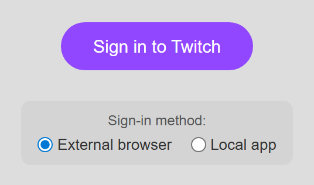

Wybierz tryb źródła Twitcha
| Tryb | Najlepsze do | Ważna różnica |
|---|---|---|
| Standard | Podstawowe przechwytywanie publicznego czatu ze strony czatu Twitcha lub jego osobnego okna. | Odczytuje to, co udostępnia strona. Jest proste, ale nie zapewnia pełnego zestawu zdarzeń EventSub. |
| WebSocket / EventSub | Obserwacje, subskrypcje, bits, nagrody, najazdy, status transmisji, Hype Train, synchronizacja moderacji, wysyłanie na czat i szczegóły kanału. | Wymaga OAuth Twitcha. Zdarzenia są włączane tylko wtedy, gdy pozwalają na to zalogowane konto, rola na kanale, uprawnienia kanału i przyznany zakres. |
Konfiguracja aplikacji komputerowej
- Wybierz Add source → Twitch.
- Wpisz login kanału Twitcha używany w jego adresie URL. Dla
twitch.tv/examplechannel, wpiszexamplechannel. - Pozostaw WebSocket wybrane dla bogatszego źródła EventSub. Twitch obecnie domyślnie używa tego trybu w aplikacji.
- Wybierz Aktywuj źródło (Activate source), a następnie Zaloguj się do Twitcha.
- Zatwierdź żądane uprawnienia i pozostaw okno źródła Twitcha otwarte.

Konfiguracja EventSub w rozszerzeniu przeglądarki
- Zainstaluj i włącz aktualne rozszerzenie Social Stream Ninja.
- Otwórz stronę źródła Twitch EventSub.
- Zastąp
examplechannelw adresie URL loginem kanału, który chcesz monitorować. - Wybierz Zaloguj się do Twitcha i zatwierdź żądany dostęp.
- Pozostaw tę stronę otwartą. Przed testowaniem alertów potwierdź, że pola User i Channel są prawidłowe.
https://socialstream.ninja/sources/websocket/twitch.html?channel=CHANNEL_LOGINAby zamiast tego użyć podstawowego przechwytywania Standard, otwórz zwykłą stronę czatu Twitcha lub osobne okno czatu i utrzymuj czat widoczny.
O co prosi Twitch
Social Stream prosi o token użytkownika z uprawnieniami potrzebnymi do obsługiwanych elementów sterowania i subskrypcji. Nadanie zakresu nie czyni konta nadawcą ani moderatorem; Twitch nadal sprawdza rolę konta na wybranym kanale.
| Grupa uprawnień | Zastosowanie |
|---|---|
| Czat | Odczyt czatu, wysyłanie na czat i lista uczestników. |
| Obserwujący i subskrybenci | Zdarzenia obserwacji, subskrybentów, subskrypcji w prezencie i wiadomości ponownej subskrypcji. |
| Bits, nagrody i Hype Train | Cheers, wymiany niestandardowych nagród punktów kanału i status Hype Train. |
| Moderacja | Usuwanie wiadomości, blokady/wyciszenia czasowe i synchronizacja blokad, gdy konto może moderować kanał. |
| Zarządzanie kanałem | Odczyt/aktualizacja tytułu i kategorii, odczyt/zarządzanie reklamami i wyświetlanie statystyk kanału. |
Zobacz oficjalną dokumentację Twitcha: dokumentację zakresów i Typy subskrypcji EventSub.
Zdarzenia obsługiwane przez obecne źródło
- Obserwowania:
new_follower. - Subskrypcje:
new_subscriber,resubisubscription_gift. - Bits:
cheerz wartością wpłaty. - Punkty kanału:
reward. - Najazdy:
raid. - Status transmisji i reklam:
stream_online,stream_offlineiad_break. - Hype Train:
hype_trainaktualizacje rozpoczęcia, postępu i zakończenia. - Moderacja: aktualizacje blokad i usuwania wiadomości, gdy są dozwolone.
Zdarzenia subskrybentów Twitcha wymagają uprawnionego kanału Affiliate/Partner i dostępu nadawcy. Subskrypcje obserwacji i moderacji wymagają, aby zalogowany użytkownik był nadawcą lub upoważnionym moderatorem, zależnie od zdarzenia.
Nazwy alertów używane dalej i pola danych opisują: Przewodnik zgodności zdarzeń i alertów i Dokumentacja wydarzeń.
Pierwsze kroki, gdy brakuje zdarzenia
- Potwierdź, że strona źródła pokazuje prawidłowe Użytkownik (User) i Kanał.
- Pozostaw stronę/okno źródła otwarte i potwierdź aktywne połączenie czatu.
- Jeśli czat działa, ale obserwacje/subskrypcje/nagrody nie, wyloguj się i autoryzuj ponownie, aby nadać obecne zakresy uprawnień.
- Sprawdź, czy zalogowane konto jest nadawcą lub uprawnionym moderatorem tego kanału.
- Sprawdź, czy dok i nakładka alertów używają tego samego identyfikatora sesji Social Stream.
- Użyj sztucznej wiadomości testowej z panelu lub podglądu Multi Alerts, aby oddzielić problemy przechwytywania od problemów nakładki.
EventSub może dostarczyć powiadomienie więcej niż raz. Twitch dokumentuje dostarczanie co najmniej raz. Social Stream zawiera ochronę przed duplikatami, ale własne odbiorniki API powinny nadal w miarę możliwości usuwać duplikaty według tożsamości zdarzenia/wiadomości. Zobacz oficjalne Omówienie EventSub.